Night 1 and Day 2 - Jackson, TN
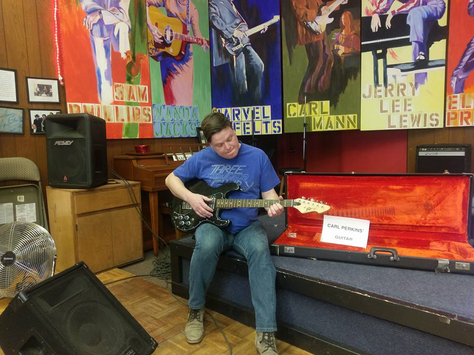
The first stop on day two of our trip was the wildly strange Rock A Billy Hall of Fame Museum.
We were regaled/told sit down and listen to tales from the beginning of Rock A Billy music by the owner, as well as repeatedly assured that he was very good friends with Carl Perkins.
(see guitar!) A small section of the museum was devoted to MY personal favorite son of Jackson, Wink Martindale.
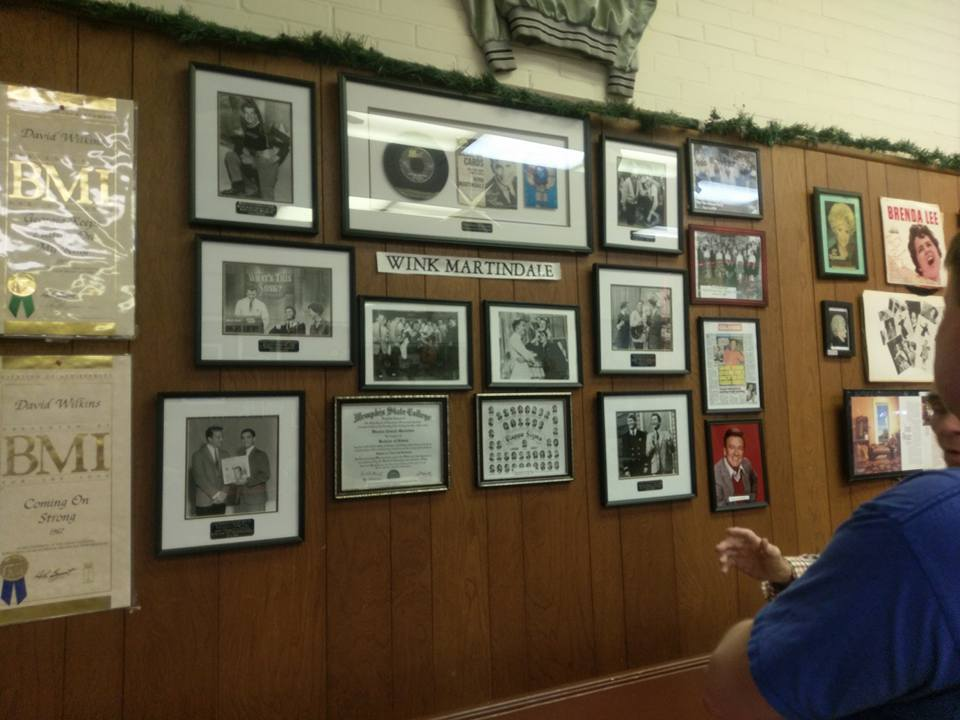
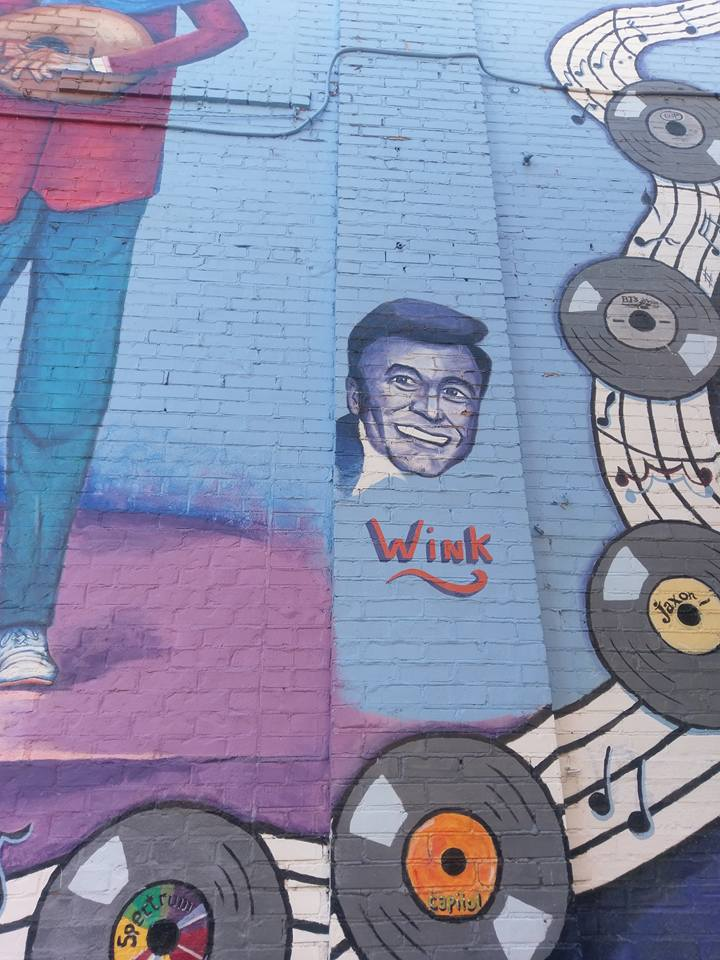
Night 2 and Day 3 - Birmingham, AL
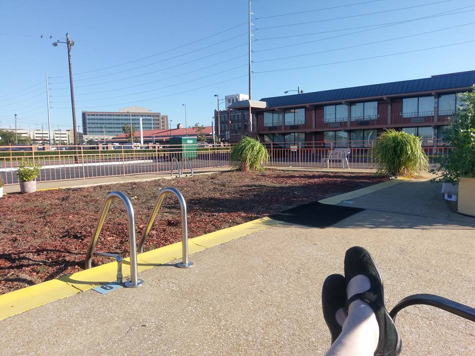
Day three was spent walking the whole of downtown Birmingham, and then visiting the most "This is dangerous and I'm shocked this is open to the public, and I work at City
Museum, place ever," SLOSS Furnaces. SLOSS was a pig-iron making blast furnace from 1882-1971, and was made a National Historic Landmark in 1981. More here.
SLOSS is a giant, hulking complex of rusting metal with few instructions for how to tour it or what on earth you're looking at. I'm pretty sure we wandered in to some areas we weren't supposed to, but that's where all the best pictures are from!
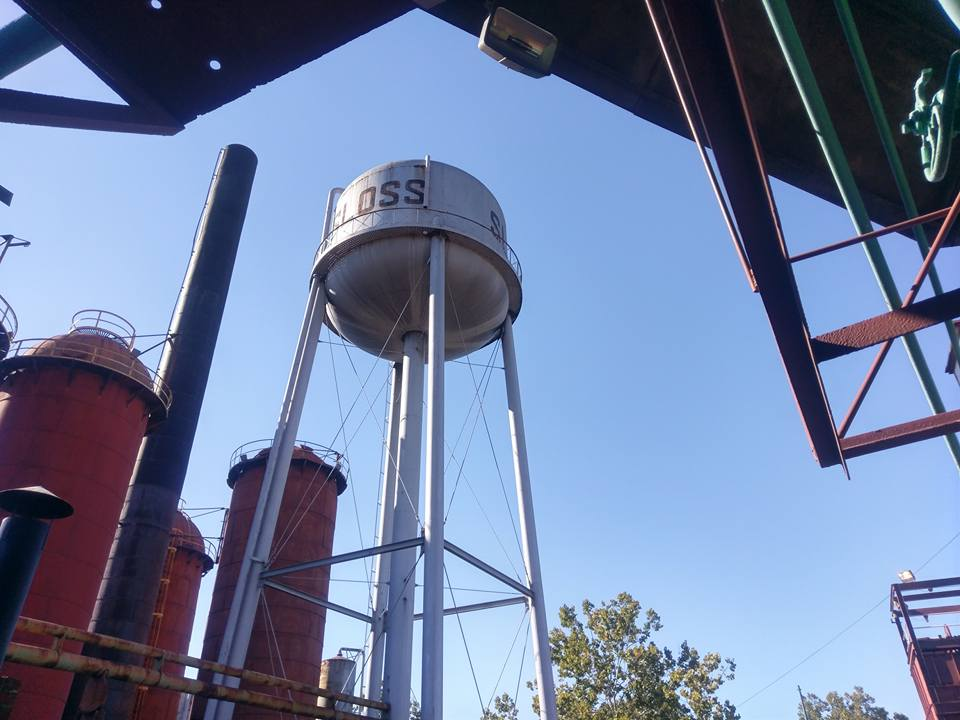
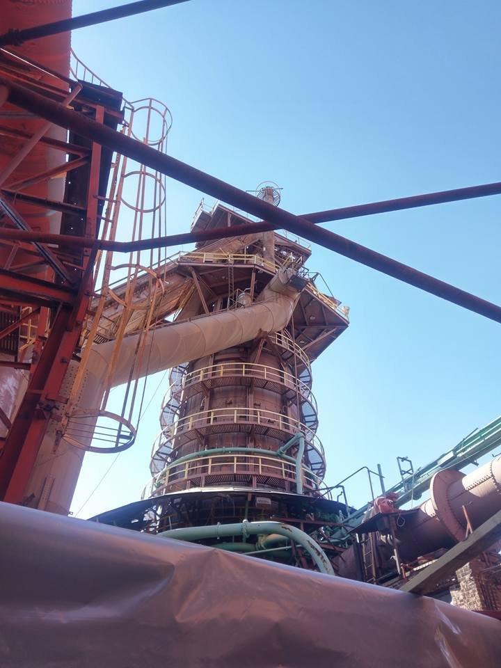
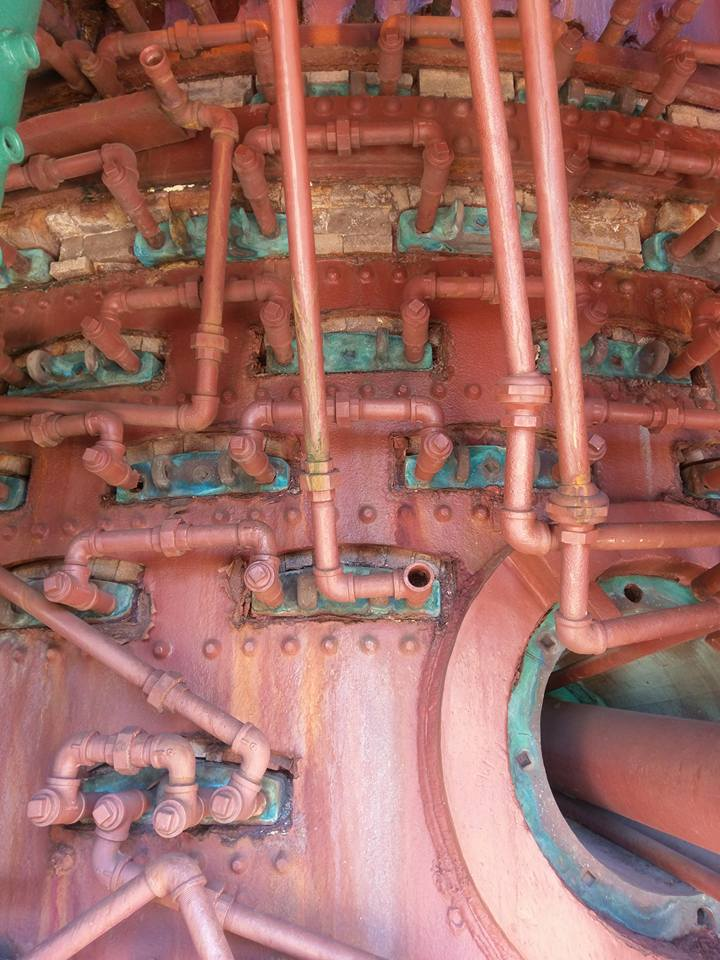
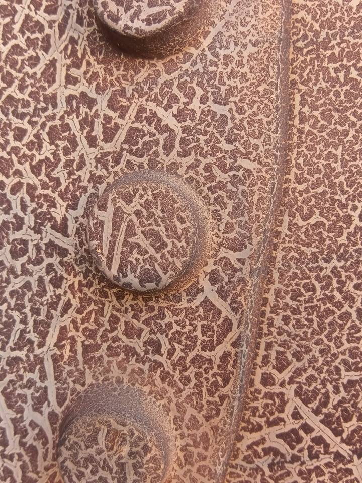
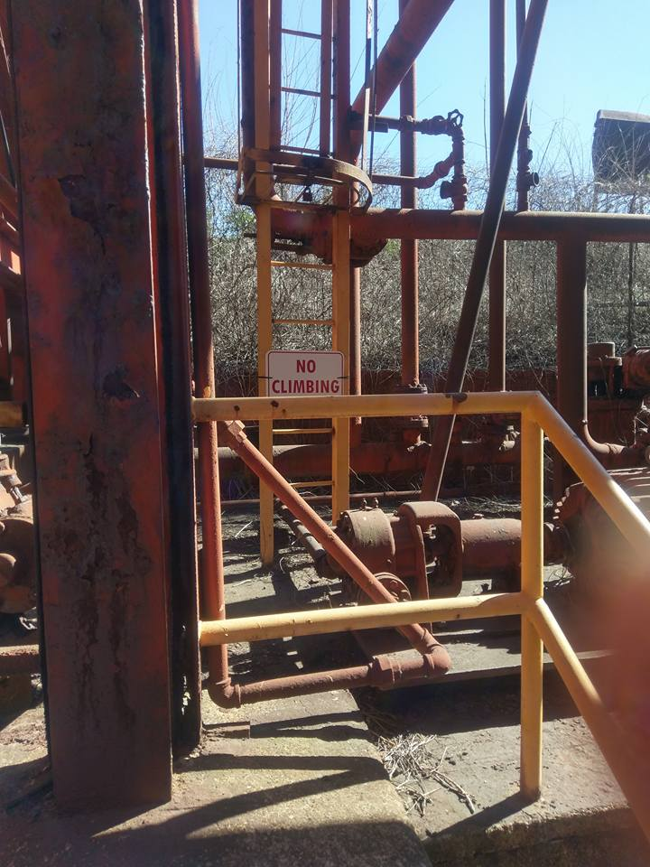
Day 4 - Chattanooga, TN
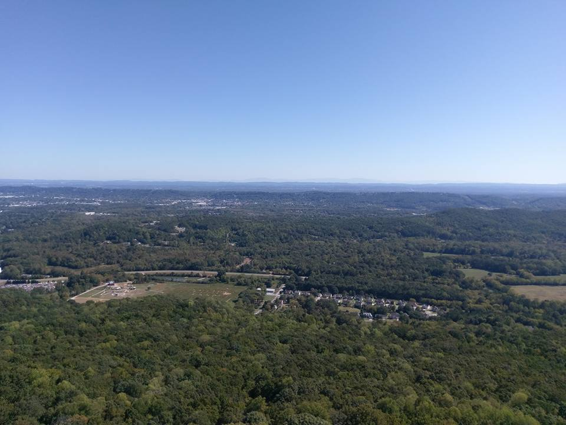
The last big day of our trip was going full tourist and visiting Rock City in Chattanooga, Tn.
Yeah, yeah, yeah, the view. I still thought the best part was the tacky Mother Goose's Village, day-glo painted and black light caves full of nursery rhyme characters.
It was built in the 40's post-war to increase visitors, and I really hope it's never modernized.
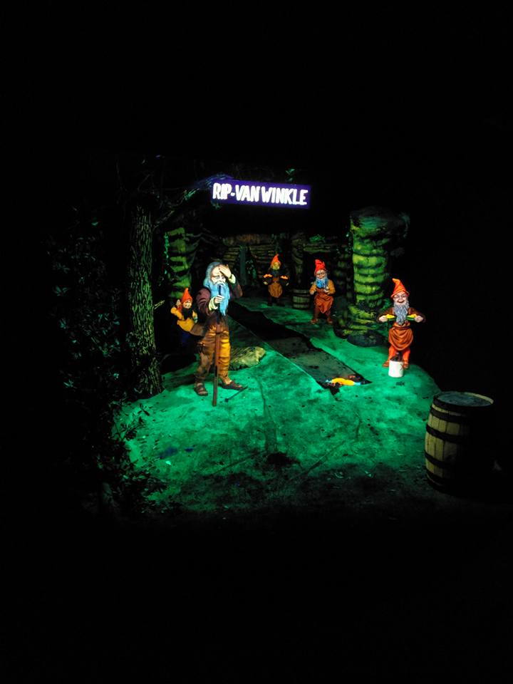
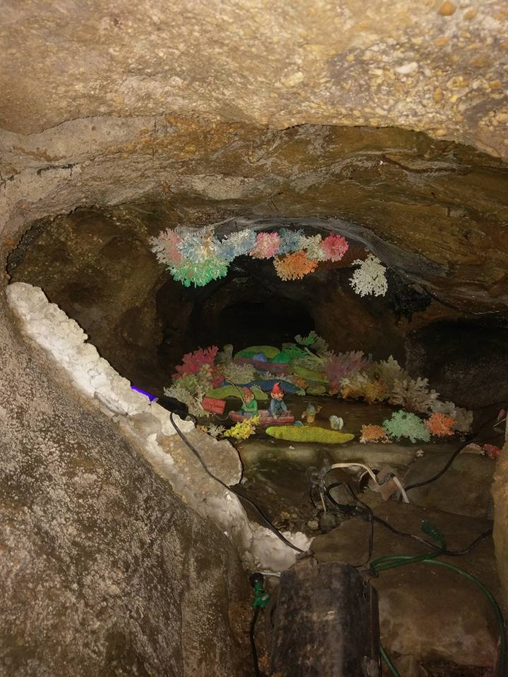
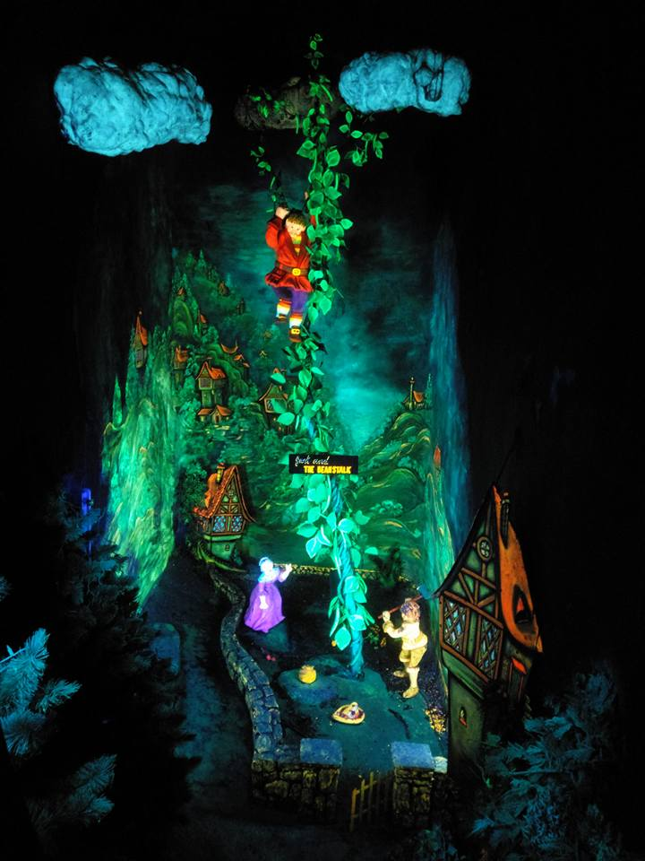
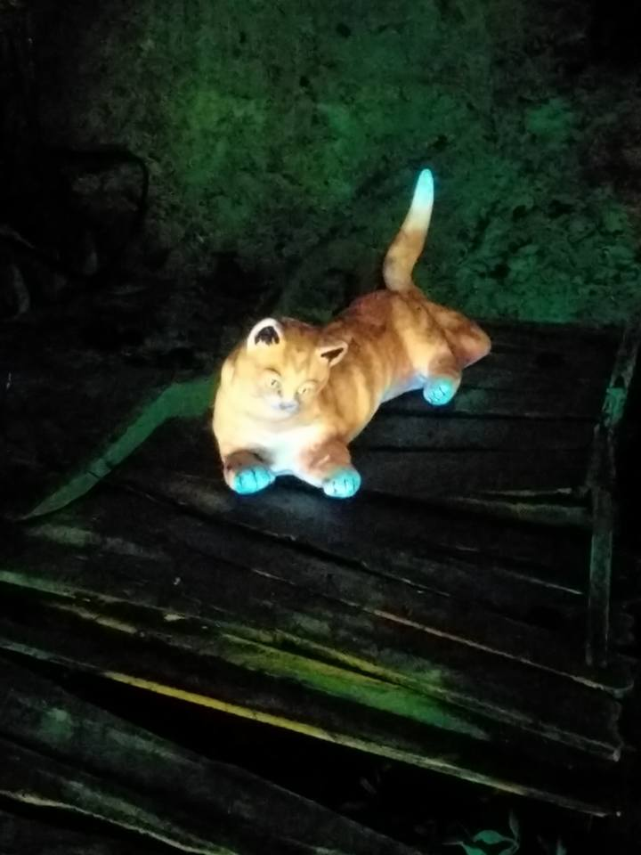